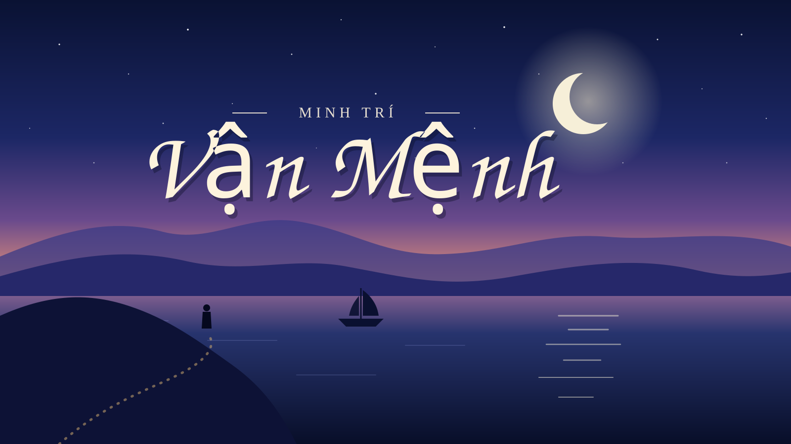

Một buổi chiều ở Nha Trang, nhìn từ phía mình đứng.
Ngày bé, mình nghĩ vận mệnh là một tờ giấy đã viết sẵn ở đâu đó, và việc của mình chỉ là sống cho đến khi đọc hết nó. Lớn lên một chút, mình đổi sang nghĩ ngược lại: mọi thứ là do mình, ai khổ là do không đủ cố gắng. Giờ ngồi viết những dòng này, mình thấy cả hai cách nghĩ đều đúng một nửa, và nửa còn lại mới là chỗ đáng bàn.
1. Những điều mình không chọn
Mình không chọn được nơi mình sinh ra, không chọn được những năm đầu đời diễn ra như thế nào, cũng không chọn được người mình gặp sớm hay muộn. Có những cánh cửa mở ra trước mặt mình khi mình chưa kịp hiểu nó là gì, và có những cánh cửa khép lại khi mình vẫn đang đứng gõ.
Gọi những thứ đó là vận mệnh cũng được. Mình không muốn cãi nhau với từ ngữ. Chỉ là mình nhận ra, nếu cứ dành sức để tức giận với phần mình không đổi được, thì phần mình đổi được sẽ bị bỏ quên.
Hoàn cảnh là điểm xuất phát, không phải đích đến.
2. Nhìn vận mệnh bằng mắt của một sinh viên cơ điện tử
Học Cơ điện tử ở Nha Trang, mình quen với một ý tưởng: một hệ thống tốt không phải hệ thống không bao giờ bị tác động, mà là hệ thống biết đo lại chính mình và điều chỉnh. Nhiệt độ ngoài trời mình không quyết định được, nhưng cái máy lạnh thì vẫn giữ được căn phòng ở mức mình muốn, nhờ cảm biến và vòng phản hồi.
Kết quả quay lại làm cơ sở cho lần chọn kế tiếp. Chính vòng quay đó làm nên đường đi.
Điều kiện ban đầu thì cố định. Nhiễu thì luôn có: thi trượt, kế hoạch đổ vỡ, một dự án chạy mãi không ra tín hiệu. Phần mình điều khiển được là cách mình đọc lại kết quả và chỉnh bước tiếp theo. Với mình, đó là lúc vận mệnh bắt đầu có chỗ cho bàn tay của mình.
3. Những ngày mình hoài nghi
Không phải ngày nào mình cũng nghĩ được như vậy. Có những tối ngồi trước một mạch không chịu chạy, đã kiểm tra nguồn, kiểm tra dây, đọc đi đọc lại datasheet mà vẫn không ra, mình cũng từng nghĩ: hay là mình không hợp với con đường này. Câu nghĩ đó nghe giống một lời tiên tri, nhưng thật ra chỉ là mệt.
Sáng hôm sau, thường chỉ là một chân linh kiện cắm lệch. Mình học được rằng cảm giác "số mình thế rồi" hay đến đúng lúc mình đuối sức, chứ chưa chắc lúc nào nó cũng đúng. Nên giờ mình tập một thói quen nhỏ: đừng kết luận về cả cuộc đời vào lúc mười một giờ đêm.
Ghi chú cho mình: khi thấy mọi thứ đều sai, hãy ngủ trước, đo lại sau.
4. Điều mình giữ lại
- Biết ơn phần được cho. Có những thứ mình có không phải vì mình giỏi, và mình không nên quên điều đó.
- Chịu trách nhiệm phần mình chọn. Không đổ cho số, cũng không tự trách quá tay.
- Đi chậm nhưng đo lại thường xuyên. Một bước nhỏ đúng hướng đáng giá hơn một cú nhảy chưa nhìn.
- Giữ vài người ở gần. Phần lớn những lần mình đứng dậy được là nhờ có người nói một câu đúng lúc.
5. Lời nhắn cho chính mình
Nếu một ngày nào đó mình đọc lại bài này và đang ở một nơi khác, làm một việc khác với điều mình dự định bây giờ, thì cũng không sao. Vận mệnh có thể không đi theo kế hoạch của mình, nhưng cách mình đối xử với nó thì vẫn là của mình.
Mình không viết lại được điểm bắt đầu. Nhưng mình viết được trang tiếp theo.
Minh Trí